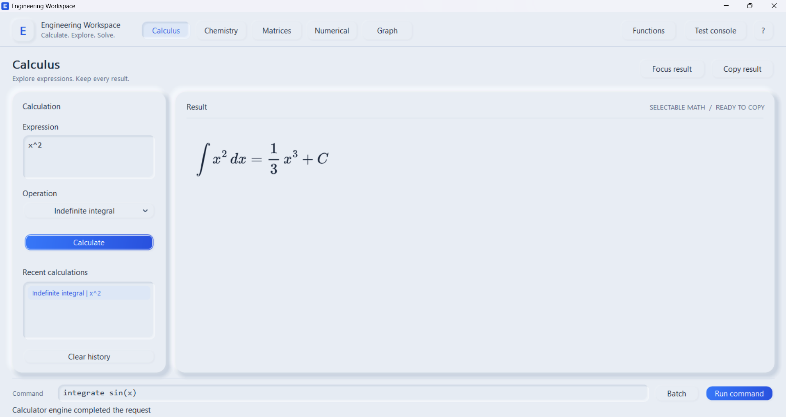

Symbolic calculus
Integrate and differentiate expressions, then inspect the returned result and available verification details.
Windows beta · Free download
Explore symbolic calculus, plot functions, and work through engineering calculations in one free desktop application. Your calculations run on your computer.

WHAT'S INSIDE
Engineering Workspace brings its calculation tools together in a desktop interface, with a separate batch console for longer sets of commands.
Integrate and differentiate expressions, then inspect the returned result and available verification details.
Plot functions and explore their shape with interactive graph controls.
Work with matrices, numerical calculations, and the app's chemistry workspace.
Run lists of calculations from the included console and save result reports in your user profile.
SYMBOLIC INTEGRATION
The offline C++ engine works with polynomials, rational functions, trigonometric and hyperbolic expressions, exponentials, logarithms, and many algebraic radicals. It transforms expressions and checks candidate antiderivatives by differentiating them. Results can include domain conditions, and the app distinguishes completed, unsupported, and verification-limited outcomes.
Use the calculus screen for one expression or the batch workspace for a list of commands.
Read a formatted antiderivative and the available verification details. Difficult expressions may remain unsupported.
The batch workspace reports each command's status and engine time, then lets you export the report.
BATCHES 3–9
Compare the uploaded v0.1.2 depth 1 runs by clock time, alongside the previously saved SymPy run. Workers are CPU threads; both Engineering Workspace runs completed 4,980 of the 5,521 supplied integrals.
Time as 5,521 integrals are processed
All lines use the same seconds scale. Engineering Workspace shows actual batch clock time; SymPy shows its saved sum of individual durations. The timing methods differ, but a higher line always means more reported seconds.
One logarithmic seconds scale: higher always means more seconds. Engineering Workspace is batch clock time; SymPy is saved summed per-integral time.
| Batch | Integrals | 1 worker completed | 1 worker clock | 4 workers completed | 4 workers clock | SymPy completed | SymPy summed |
|---|---|---|---|---|---|---|---|
| Batch 3 | 1,000 | 900/1,000 | 0.78 s | 900/1,000 | 0.30 s | 830/1,000 | 1,646.719 s |
| Batch 4 | 1,000 | 885/1,000 | 1.56 s | 885/1,000 | 0.73 s | 598/1,000 | 3,577.566 s |
| Batch 5 | 2,000 | 1,732/2,000 | 6.77 s | 1,732/2,000 | 2.12 s | 1,495/2,000 | 4,435.815 s |
| Batch 6 | 500 | 470/500 | 0.64 s | 470/500 | 0.42 s | 420/500 | 450.170 s |
| Batch 7 | 500 | 500/500 | 0.43 s | 500/500 | 0.25 s | 490/500 | 276.484 s |
| Batch 8 | 280 | 267/280 | 0.32 s | 267/280 | 0.29 s | 271/280 | 56.005 s |
| Batch 9 | 241 | 226/241 | 1.50 s | 226/241 | 0.71 s | 227/241 | 132.895 s |
| Total | 5,521 | 4,980/5,521 | 12.00 s | 4,980/5,521 | 4.82 s | 4,331/5,521 | 10,575.656 s |
These bars show how long each complete batch took on the clock. Four CPU workers finish every batch faster here. The totals are 12.00 seconds versus 4.82 seconds.
These separate bars measure the average time to solve one integral in each 20-case sample. More workers run integrals concurrently; they do not make one calculation faster. Use the clock-time bars above to compare how quickly the full batches finish.
| Integral type | 1 worker | 4 workers | SymPy |
|---|---|---|---|
| Polynomial / rational | 20/20 | 20/20 | 20/20 |
| Algebraic radicals | 20/20 | 20/20 | 20/20 |
| Trigonometric / hyperbolic | 16/20 | 16/20 | 10/20 |
| Exponential / logarithmic | 18/20 | 18/20 | 14/20 |
| Inverse functions | 20/20 | 20/20 | 20/20 |
The line chart has one seconds scale but mixes Engineering Workspace elapsed clock time with SymPy summed individual durations. The separate clock-time bars compare the one- and four-worker runs directly. Read the measurement notes.
EXAMPLE EXPLORER
Explore 15 illustrative integrals, rerun in Engineering Workspace v0.1.2 with one worker on 28 October 2026. All 15 completed. SymPy results are from the saved comparison run.
Each time is the recorded duration for that individual integral. Filtering shows saved results and does not run either solver in your browser. Measurement details.
| Integral | Family | C++ engine | SymPy |
|---|---|---|---|
| \(\displaystyle\int \frac{x^{5}}{9 - x^{12}}\,\mathrm{d}x\) | Rational | Completed · 2.189 ms | Completed · 87.366 ms |
| \(\displaystyle\int \sin^{2}{\left(x \right)} \cot^{5}{\left(x \right)}\,\mathrm{d}x\) | Trigonometric | Completed · 1.822 ms | Completed · 69.341 ms |
| \(\displaystyle\int x \left(x^{2} + 2 x + 1\right)\,\mathrm{d}x\) | Polynomial | Completed · 0.454 ms | Completed · 49.03 ms |
| \(\displaystyle\int \frac{\left(3 x + 2\right)^{5} \left(5 x + 3\right)^{2}}{\sqrt{1 - 2 x}}\,\mathrm{d}x\) | Algebraic radical | Completed · 1.299 ms | Completed · 548.031 ms |
| \(\displaystyle\int \frac{1}{- \tan^{2}{\left(x \right)} + \sec^{2}{\left(x \right)}}\,\mathrm{d}x\) | Trigonometric | Completed · 0.997 ms | Unevaluated · 277.783 ms |
| \(\displaystyle\int \frac{\sec^{2}{\left(x \right)}}{\cot{\left(x \right)}}\,\mathrm{d}x\) | Trigonometric | Completed · 0.341 ms | Completed · 56.816 ms |
| \(\displaystyle\int \frac{\sqrt{\sin{\left(x \right)}}}{\sqrt{\cos{\left(x \right)}}}\,\mathrm{d}x\) | Trigonometric radical | Completed · 60.5 ms | Timeout (>8 s) |
| \(\displaystyle\int \frac{x^{3} - 1600}{x^{3}}\,\mathrm{d}x\) | Rational | Completed · 1.226 ms | Completed · 60.465 ms |
| \(\displaystyle\int \cos{\left(x \right)} \cos{\left(3 x \right)}\,\mathrm{d}x\) | Trigonometric | Completed · 0.109 ms | Completed · 131.307 ms |
| \(\displaystyle\int \frac{1}{x^{7} \left(x^{2} + 1\right)^{3}}\,\mathrm{d}x\) | Rational | Completed · 0.175 ms | Completed · 88.983 ms |
| \(\displaystyle\int \sqrt{1 - x^{2}} \operatorname{asin}{\left(x \right)}\,\mathrm{d}x\) | Inverse function | Completed · 4.851 ms | Completed · 428.061 ms |
| \(\displaystyle\int x^{4} e^{- x}\,\mathrm{d}x\) | Exponential | Completed · 0.042 ms | Completed · 68.079 ms |
| \(\displaystyle\int \frac{1}{e^{x} + e^{- x}}\,\mathrm{d}x\) | Exponential | Completed · 1.568 ms | Completed · 77.552 ms |
| \(\displaystyle\int \frac{x^{5}}{\sqrt{x^{3} + 1}}\,\mathrm{d}x\) | Algebraic radical | Completed · 0.519 ms | Completed · 111.769 ms |
| \(\displaystyle\int x^{2} e^{- x}\,\mathrm{d}x\) | Exponential | Completed · 0.024 ms | Completed · 65.443 ms |
Showing 15 of 15 illustrative cases
INSIDE THE APP
These screenshots show the Windows app handling a calculus calculation and the updated batch workspace.


BUILT FOR YOUR DESKTOP
The mathematics engine runs locally. Once the application and its required Windows components are installed, routine calculations do not need a connection or an account.
DOWNLOAD
Download the free v0.1.2 Beta for Windows 10 or 11 x64. The installer creates Start Menu and desktop shortcuts. The portable ZIP runs from an extracted folder. On a computer without Microsoft Edge WebView2 Runtime, the installer needs internet once to install that Windows component. Calculations then run locally.
Free installer and portable ZIP.
Windows 10 or 11 · No subscription · Offline calculations
ABOUT
Engineering Workspace is a free application for students and anyone who wants to explore mathematics and engineering calculations. It is currently in beta development. Some difficult integrals remain unsupported, and a reported result should be checked in context before use.